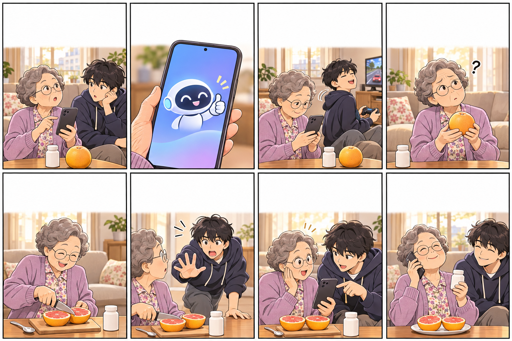

AI야, 혈압약 먹는데
자몽 같이 먹어도 되니?
네! 함께 드셔도
전혀 문제없어요. 맛있게 드세요!
아~ 그거 할루시네이션이야,
할머니. 신경 쓰지 마~
할루… 시네…?
영화 이름인가?
결국, 경고는 전해지지 않았다
AI가 괜찮다니까
하나 먹어 볼까~
할머니, 잠깐만요!!
AI가 정보를 왜곡한 거예요.
없는 사실을 진짜처럼 말하는
‘정보 왜곡 현상’이요!
아이고, 거짓말을
했다는 거구먼!
약사 선생님, 이 혈압약에
자몽 먹어도 돼요?
(전화) 같이 드시면
약 기운이 너무 세질 수 있어요!
할루시네이션 → 정보 왜곡 현상 · 알아듣는 말이라야 막을 수 있습니다
일부 혈압약(칼슘통로차단제 등)은 자몽과 함께 먹으면 약 성분이 몸에 많이 남을 수 있습니다. 약은 약사·의사에게 확인하세요. · 그림: 생성형 AI(ChatGPT) 활용 / 이야기·대사·구성·편집: 응모자